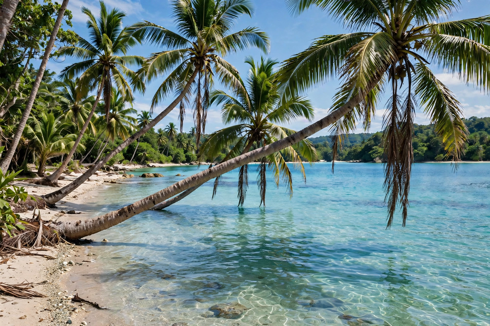

Tropics
From Wikipedia, the free encyclopedia

The tropics are the regions of Earth surrounding the Equator, bounded by the Tropic of Cancer (23.4° N) and the Tropic of Capricorn (23.4° S) — the latitudes where the Sun can stand directly overhead. The zone includes most of Earth's rainforests and deserts, its greatest biodiversity, and about 40% of its human population. Tropical climates (in Köppen's system, the A climates) are warm year-round, their seasons marked by rain rather than temperature.
Climate and ecology
Hadley-cell circulation drives the pattern: rising air and rain near the equator (the doldrums/ITCZ), descending dry air at the margins (the great deserts). The tropics hold the majority of terrestrial species on a minority of land area, store vast carbon in rainforest biomass, and receive the planet's most intense solar energy — energy exported poleward by ocean and atmosphere, driving the global climate machine.
People and change
Some 3.3 billion people live in the tropics, projected to be half of humanity by the 2050s, with its megacities (Lagos, Jakarta, Manila, Dhaka) at the front line of heat stress, sea-level rise and monsoon change. Tropical diseases, deforestation politics and the zone's disproportionate climate vulnerability — having contributed least to emissions — structure its role in world affairs.